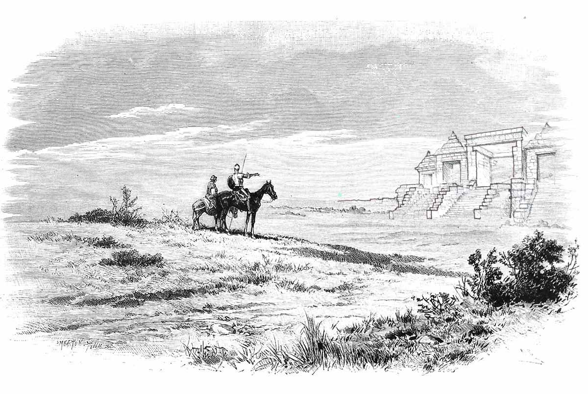

*
© 2014 Indonesian Temple Expedition Team

Ratu Boko is a magnificent palace complex built in the 8th century. Built during the reign of Rakai Panangkaran, Dynasty descendant dynasty. The palace was originally built for seclusion and to focus on the spiritual life. Although it was founded by a Buddhist, it has Hindu elements. This can be seen with the Linga and Yoni, Ganesha statues, and gold plate that reads "Om Rudra ya namah swaha" as a form of worship of the god Rudra is another name of Lord Shiva. The existence of these Hindu elements & mdash; blend of Hindu and Buddhist culture which is obvious from the presence of Dyani Buddha statue and statues of Ganesha, Durga, and Yoni, proving the existence of religious tolerance. Kraton Ratu Boko is one of the historical sites that show harmony among people, especially Hinduism and Buddhism.
This palace is the silent witness of the early triumph of the kingdom of Srivijaya in Sumatra. Balaputradewa Srivijaya king had fled to this castle when attacked by Rakai Pikatan. Balaputradewa rebelled because they felt as the number two in the government of the Ancient Mataram Kingdom Rakai Pikatan wedding due to Pramudhawardani (brother Balaputradewa). After he was defeated and fled to Sumatra, he became king in the kingdom of Srivijaya. Ratu Boko is an archaeological site in the form of relics of the kingdom of Mataram from the 8th century, the forerunner of the founder of Borobudur and Prambanan. Kraton Ratu Boko own name has another meaning, the people call this site and connect with legends such Jonggrang Loro, where the palace is a palace of King Boko, Loro Jonggrang father. Boko itself also means stork. Allegedly, once this place there are many crane (bird blekok in Javanese). Kraton Ratu Boko was used during the Sailendra dynasty before the time of King Samaratungga (founder of the Borobudur temple) and Rakai Pikatan (founder of Prambanan Temple).
• GPS coordinates: -07°46'17.4972", 110°29'26.6568". See → Map of Ratu Boko Temple
• Approximately 3.4 miles south of Prambanan temple situated on a hill with a height of ± 195.97 masl. See → Directions from Prambanan to Ratu Boko
Time in Ratu Boko Temple now:
WIB. See also → Weathet forecast Ratu Boko Temple
• Area of about 25 hectares. Is administratively located in the two villages, the Village and Village Sambirejo Dawung, District Prambanan, Klaten regency, Yogyakarta.
• Distance from Malioboro: 20.2 miles.
Because it is a palace, Ratu Boko Palace has many buildings in it. Ratu Boko Palace consists of several paduraksa gate (gate with a roof), Batukapur temple made of limestone when exposed to sunlight and the color became dazzling white, Combustion Temple with the well amid the supposedly used as a crematory, a place for to the king (Paseban ), pavilion, place of worship, the abode of the king's daughter (princess), lanang cave and cave wadon. In the eastern part of the palace, we will see two caves that are formed from sedimentary rocks. A cave called Gua Lanang upper while under the so-called Cave Wadon. In front of the cave there is a pool Lanang and three stupas. In the southeast of the temple burning of old wells that are believed to be holy water and is often used in religious rituals. The well is full of mystery will be encountered when running to the southeast of the temple burning. It is said that the well was named Amrita Mantana which means holy water given spell. Now, the water is still often used. Local people said, well water it can bring good luck to the wearer. While Hindus use it for Tawur grand ceremony the day before Nyepi. The use of water in the ceremony is believed to support the goal, which is to purify themselves and to return the earth and its contents at the beginning harmony.
Famous of Kraton Ratu Boko is the gate with views of sunset and sunrise from the gate. Additionally, Many consider radiant aura of mystique in Boko feels strong. There's even a mention in the kingdom stood invisible. Ratu Boko is also used ritual visitors. Visitors are free to perform rituals here for security officers to notify. Should the end for not doing any improper like pee, spit, or pick up something in Boko temple.
Ratu Boko Palace is accessible by road Yogyakarta-Solo, Prambanan then fork to the right approximately 3.4 miles. For users of public transport, the bus ride from the direction of Yogyakarta route 1A and 1B TransJogja and down in Prambanan Terminal (cost Rp 3.000, -). From the terminal rise Prambanan Ratu Boko Palace motorcycles to the estimated cost of Rp 5,000, - to Rp 20,000, - Depending on our bid. Make sure the motorcycle taxi driver to wait Because there is no public transportation from Boko again.
To travel to Ratu Boko Palace, interactive maps, weather forecasts, the price of admission, and other information click → Ratu Boko Temple Expedition
comments powered by Disqus
 RATU BOKO | Page 1 of 15
RATU BOKO | Page 1 of 15